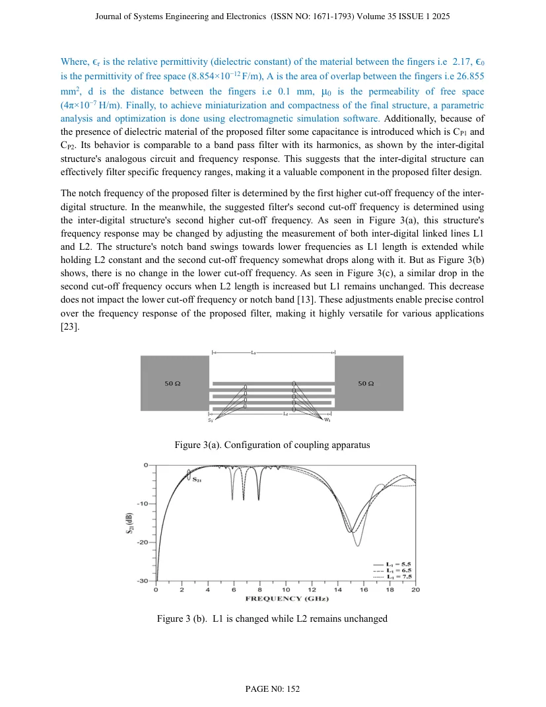
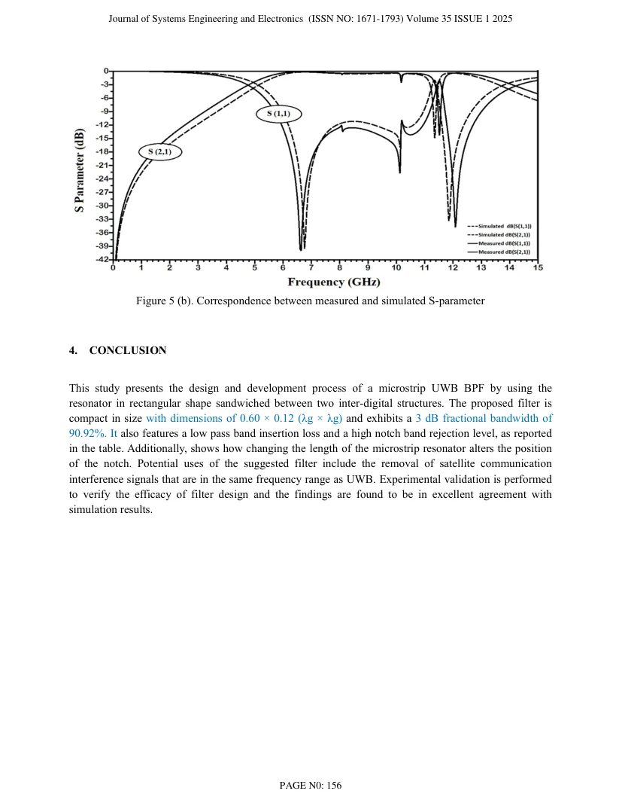

Abstract
An ultra-wideband (UWB) band pass filter is proposed in the paper. The filter is compact, small size and had planar structure. The suggested filter does not include any via and defective ground structure. The filter is designed using two inter-digital structures sandwiching concentric square ring resonator. The pass band starts from 5.11 GHz and ends at 13.63 GHz having insertion loss below 0.1 dB and maximum return loss of 39.58 dB at 6.75 GHz, with 3 dB fractional bandwidth of 90.92%. The notch in pass band is at 11.35 GHz having the maximum insertion loss of 14.80 dB and minimum return loss is below 2 dB, with 3 dB fractional bandwidth of 1.41%. The bandwidth shown by the pass band of proposed filter is 8.52 GHz which is in the range of UWB band pass filter. The proposed filter has been constructed and simulated in Keysight Advance Design System. The filter's rejection performance is good and the S-parameter characteristics provide high skirt selectivity over the pass band and notch. The frequency band and notch at 11.35 GHz are useful in existing communication systems such as cognitive radio systems, satellite communications and certain military applications for avoiding interference operating in the proposed frequency range
Transcribed from the uploaded publication PDF; wording follows the paper.
Research scope
The paper proposes a compact planar UWB bandpass filter formed by two interdigital structures sandwiching a concentric square-ring resonator. A notch is introduced within the passband to reject an interfering frequency range.
Methodology described in the paper
The manuscript reports a passband from 5.11 to 13.63 GHz, with 8.52 GHz bandwidth and a 3 dB fractional bandwidth of 90.92%. The notch is reported at 11.35 GHz. The design is simulated using Keysight ADS and avoids vias and a defected ground structure.
Key reported details
5.11–13.63 GHz passband · 11.35 GHz notch
Figures, layouts & results
These are page extracts from the actual uploaded research paper, not illustrative or generated diagrams. Open the full PDF for the original captions, scales and context.

